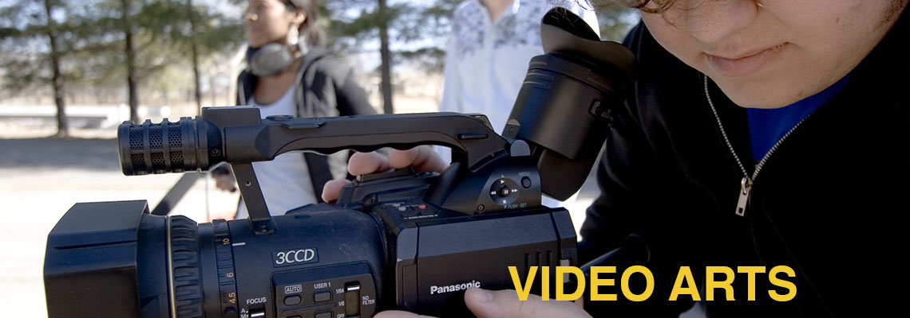

The Video Arts and Technology Program provides a dynamic education in video, audio and television production. The program prepares students for positions in the entertainment industry, electronic journalism, audiovisual production companies, broadcast and cable networks, and corporate communications departments. It combines extensive hands-on experience with theoretical coursework in a comprehensive academic program.
VAT students work in a digital environment in BMCC's state of the art television studios, audio studio, and postproduction laboratories. Students learn the entire process for creating professional video and audio programs from writing a script and creating a budget, to shooting a scene and editing a final cut. All VAT students do an internship at a professional media facility.
Upon successful completion of the requirements listed below, students earn an Associate in Science (A.S.) degree. Most courses in the Video Arts and Technology program (VAT courses) are restricted to students enrolled in the program.